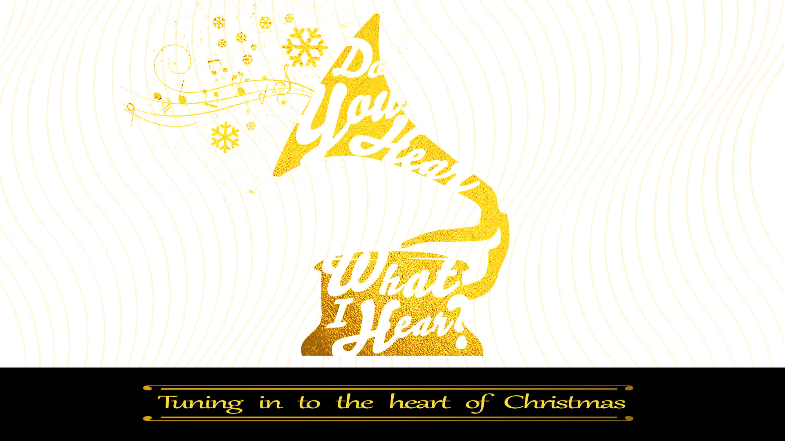
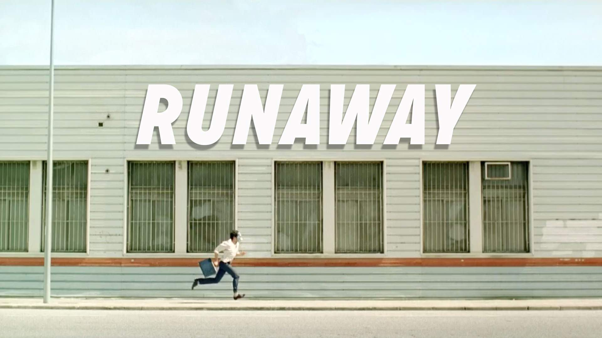

June 12, 2016
June 19, 2016
June 26, 2016
July 3, 2016
July 10, 2016
July 17, 2016
July 31, 2016
August 7, 2016
August 14, 2016
May 15, 2016
May 29, 2016
June 5, 2016
May 8, 2016
April 10, 2016
April 17, 2016
May 1, 2016
March 27, 2016
February 28, 2016
March 06, 2016
March 13, 2016
January 17, 2016
January 24, 2016
January 31, 2016
February 7, 2016
February 14, 2016
February 21, 2016
December 27, 2015
January 3, 2016
January 10, 2016
December 24, 2015

November 29, 2015
December 6, 2015
December 13, 2015
December 20, 2015
November 22, 2015
October 18, 2015
October 25, 2015
November 1, 2015
November 8, 2015
November 15, 2015
September 20, 2015
September 27, 2015
October 4, 2015
October 11, 2015
September 13, 2015

August 23, 2015
August 30, 2015
September 6, 2015
July 19, 2015
July 26, 2015
August 2, 2015
August 9, 2015
August 16, 2015
June 28, 2015
July 5, 2015
July 12, 2015